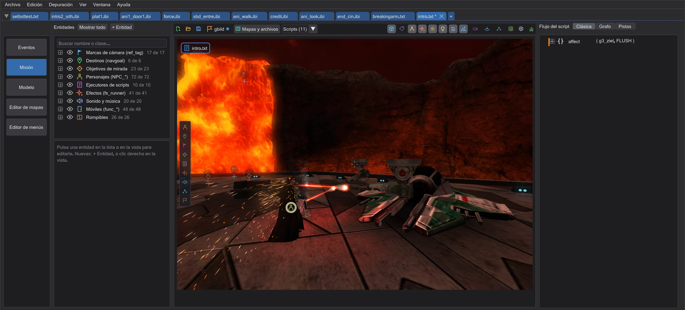

El mapa
El mapa en 3D, dibujado como lo dibuja el juego: con luces, resplandor, niebla, efectos y las figuras del script.

Abrir un mapa#
Cambia a Misión en la barra de modos. Una misión trae su mapa (Misiones). Sin misión, Mapas y archivos abre un mapa del disco o de un .pk3, o carga un archivo .ent aparte. Scripts (N) lista los scripts a los que apuntan las entidades del mapa: elige uno para cargar su cinemática.
Moverse#
| W A S D (ratón sobre la vista) | Volar; Q / E bajar y subir, Mayús más rápido |
| Arrastrar con el botón derecho | Mirar alrededor |
| Arrastrar con el botón central | Desplazar |
| Alt + botón central | Orbitar |
| Rueda | Zoom |
| Doble clic en una entidad de la lista | Volar hasta allí |
| Ctrl + 1 ... 9 | Guardar la vista; 1 ... 9 vuelve a ella (se guarda por mapa) |
Qué se muestra#
Los botones a la derecha de la barra activan y desactivan partes de la imagen: entidades, nombres, las figuras del script, efectos, resplandor, luz dinámica, niebla y cielo. Vista superior mira hacia abajo en vertical como un plano y recorta todo lo que está por encima de la altura de corte; arrastra el cuadro de altura para ver otra planta. Ajustes de la vista (engranaje) contiene brillo, luz ambiental, detalle, sombras de personajes, Resaltar las entidades de este script, que atenúa todas las entidades que el script activo no usa, y Pantalla del juego: la relación de aspecto del juego y cg_fovAspectAdjust, que deciden cuánto ve cada cámara (Vista previa y mirar a través).

r_DynamicGlow: en el mapa, en entidades de brushes y modelos, en las partes brillantes de las figuras como los ojos de los droides, en efectos como el fuego y las chispas y alrededor de las hojas de los sables láser), niebla (r_drawfog), luces dinámicas, destellos de lente, hierba, arbustos y salpicaduras de lluvia en el suelo (surfaceSprites: brizna a brizna donde los pone el juego, meciéndose y desvaneciéndose con la distancia, también en entidades de brushes como una pared que aparece al usarse; salpicaduras de lluvia solo mientras llueve), el clima (con Movie Duels también la lava de fx_lava) y las estelas, chispas y quemaduras de los sables (Sables láser: paredes y choques). Las armas, botiquines, escudos y munición están donde los deja el juego (los objetos con targetname solo aparecen al usarse), y las estaciones de recarga de suelo, paneles de seguridad, cámaras de pared, torretas, armas emplazadas, E-Webs, torretas centinela y el cañón de iones están con los modelos que les da el juego (una torreta centinela se despliega un segundo después de empezar el mapa o de activarse y barre lentamente de lado a lado mientras no tiene objetivo; las torretas centinela, las torretas y, con Movie Duels, misc_turretG2 buscan a las figuras de la escena como en el juego, giran hacia una, disparan y la hieren: proyectiles con fogonazo e impacto, daño según dónde aciertan (Jedi Outcast y Movie Duels con sus propias reglas), y lo que destruyen sigue destruido: una figura muere; otra torreta, algo rompible o una mina láser estalla y se activa su objetivo. SET_NOTARGET y SET_PLAYER_TEAM cuentan; el jugador solo es objetivo si la escena lo contiene. El cañón de iones dispara solo, o tras un use, con su fogonazo y su retroceso, al doble del tamaño de su modelo como en el juego); las minas láser cuelgan de su pared y, activadas, dibujan su rayo y zumban (con el sonido de aviso al armarse); un script o un trigger las activa o desactiva, el rayo se detiene en las puertas y otras partes móviles donde estén en ese momento, en otras minas láser y en modelos rompibles sólidos, y una figura que entra en el rayo (o solo el arma de su mano) hace estallar la mina: explosión, y la mina desaparece; como el daño de explosión del juego, hiere a las figuras cercanas (cuanto más cerca, más; no a través de paredes), y una figura a la que se le acaba la salud muere como en una zona mortal (Figuras y trayectos); como en el juego, la mina usa sus destinos, así que las puertas, paredes o contadores tras ella cambian y los scripts tras ella se ejecutan (el usescript de un contador, un ejecutor de scripts), con un solo conteo para scripts y móviles. Una mina que estalla hace estallar también las minas activadas cercanas (las minas colgadas juntas estallan juntas). Las figuras muestran cada etapa de su shader: brillo, cromado (también en el arma o la empuñadura del sable de su mano, girando con la figura como en el juego), partes teñidas como la pintura de los droides de combate, los visores negros de los soldados clon, etapas parpadeantes y animadas, etapas de textura móviles (tcMod) como el brillo del holograma del Emperador, y superficies que su shader mueve con deformVertexes wave, bulge o move, como el humo alrededor del Yoda sombra (md_yoda_shadow). Los efectos también se dibujan con cada etapa de su shader: una explosión mezcla sus dos etapas animadas como en el juego, y cada etapa, incluida la primera, toma el color y el desvanecimiento de la partícula solo donde su shader lo pide (rgbGen vertex, alphaGen vertex); si no, muestra su imagen tal cual, como el juego; una imagen de efecto sin script de shader se dibuja como el shader integrado del juego para ella: mezclada por su alfa con el color y el desvanecimiento de la partícula, y visible a través de las paredes. Los modelos que llevan los efectos (useModel, como las volutas de niebla de duel_exegol) también se dibujan y se giran hacia la cámara donde su shader dice deformVertexes autosprite. Los rayos de fx_target_beam disparan hacia su objetivo como en el juego, también cuando un script o un trigger los activa o desactiva (un rayo de un solo disparo dispara una vez por use); cada disparo apunta adonde está el objetivo en ese momento (un rayo en un tren en marcha lo sigue), se detiene en las puertas, partes móviles y figuras que haya en medio, y un rayo que se vuelve a activar espera su pausa (wait) como el juego. Estadísticas muestra fotogramas por segundo, texturas y valores de la tarjeta gráfica cuando algo se ve mal.